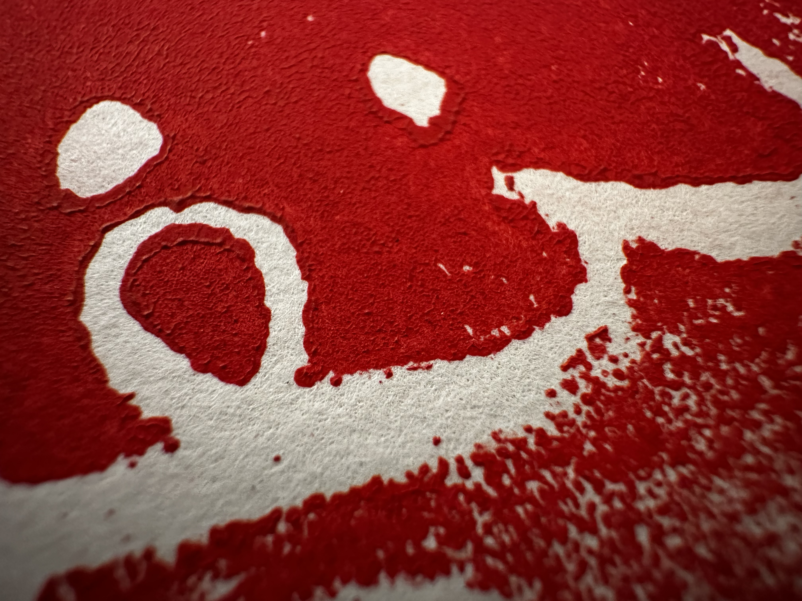

One of our projects for Art Appreciation was printmaking. The image on the left shows one of the works I created using red paint. The Arabic Calligraphy written translates to "Be patient for what will benefit you."
For this assignment, we were given an image and to draw something going off from the image. The image I recieved reminded me of the Pyramids of Giza in Egypt. For this assignment, we were instructed to use charcoal to encorporate value and shading into our artwork.
Throughout the course, whenever we were instructed to draw something based on our imagination, the pyramid, for me, was by far the easiest to draw due to its unique, simple shape. For our last unit in Art Appreciation, we were given watercolor and we were allowed to pretty much draw anything.
This work was featured as a background of the Home page.